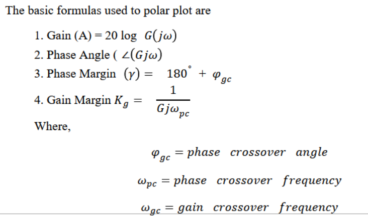

If the output of a system is under control, it is considered to be stable. A stable system produces a bounded output for a bounded input. There exist many methods to find the stability of the given system. Few of the methods are Root Locus, Bode Plot, Routh Array Method, Polar Plot, Nyquist Plot, Nicholes Chart, M and N Circle. The Polar plot is plotted against magnitude and the phase angle of the system (G(jω)H(jω)) by varying ω from zero to ∞. This polar plot consists of concentric circles and radial lines. When assessing the stability of a closed-loop system from its open-loop frequency response, the polar plot is quite useful. In general, the polar plot is often called the Nyquist plot. The polar plot is for the frequency range of 0w∞. The gain and phase angle of the system is varied for the changes in the frequency.
The nature of stability of the system is obtained using polar plot in frequency domain in this system. The given system in time domain is changed into frequency domain. Corner frequencies and frequencies nearer to the corner frequencies are identified for the given system. From the corner frequencies and frequencies nearer to the corner frequencies students able to find the gain as well as phase angle values to sketch the polar plot in virtual lab. Students also trace the values of gain and phase cross over frequencies from the polar sketch. The stability of the system is analysed by calculating and verifying the values of gain and phase margin. The students able to recall the system stable, unstable, marginally stable and absolutely stable based on the positive, negative, zero and infinite values of gain margin and phase margin.
